湖南为什么也有长城
2018-02-22
来自：凤凰青年
文|吕北客
对大多数人来说，中国长城是北方地区的独特标志。
这一巨大的防御工事，自修筑之时起，就成了中原农耕王朝和北疆游牧民族的分界线。
不过，这一人工边界，其实并非北方的专属。远在长江以南的湖南西部地区，也曾有过一座绵延起伏的长城。
这座位于湘西的长城，南起湖南、贵州边界的亭子关，北至湘西州古丈县境内的喜鹊营，途经凤凰、吉首两大湘西重镇，全长三百八十余里，纵贯整个湘西地区。
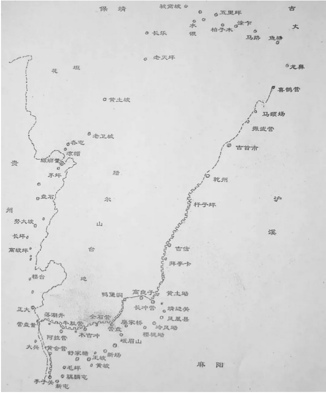
▍南方长城——湘西边墙及主要屯堡哨卡分布图
与历代苦心经营的北方长城不同，这座南方长城修筑得相当晚。它始建于明万历四十三年（1615 年），至明天启四年（1624 年）才全部竣工，共耗费白银四万多两。
明代的南方长城，还只是八尺高的土墙，到清朝嘉庆年间，凤凰县境内的一百多里长城，又从土墙改建为更加坚固的石墙，其遗迹一直遗留至今。
而和北方的长城一样的是，南方长城也是由边墙，与沿线周边密集的堡寨、哨卡在内组成的复杂防御工程，并非一道单薄的防线。
据记载，清代仅在凤凰县境内，就建有碉楼848 座、哨台88 座；而今天能得到确认的碉堡、哨卡等边墙防御遗存，仍然有506 处。


▍南方长城上的碉楼遗迹
历经两代设立的严密防御体系，防范的究竟是谁？作为一个深处内陆的省份，为什么湖南也要修长城呢？
被隔离在外的「苗疆」
今天被视作内陆省份的湖南，在二三百年前，还在与一片化外之地比邻而居。
这片不受中原王朝管辖的地域，时人称为「苗疆」。湖南西部的长城，正是汉地与「苗疆」的分界线。
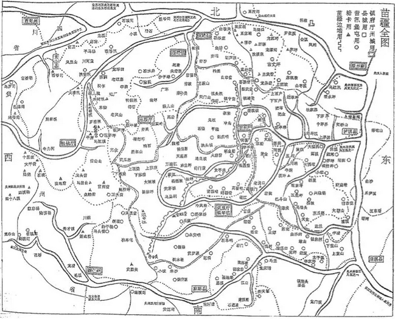
▍依照《苗防备览》重绘的湘西「苗疆全图」，可清晰看到长城的存在
所谓「苗疆」，指的是云贵高原东部，苗族和其他西南民族集中居住的山地地区。居住在这里的各民族，被中原王朝统称为「生苗」。
由于在「苗疆」居住的各民族不向官府缴税服役，独立自主，这里一直被中原王朝视为「不服王化」「叛服无常」的「生界」，成为地图上的空白区域。
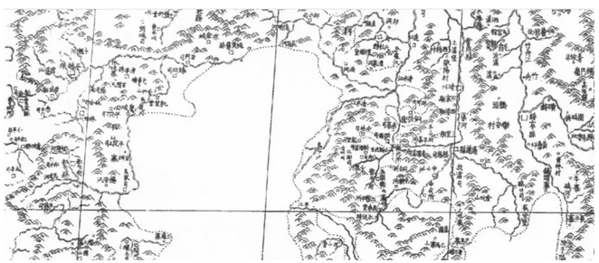
▍康熙《皇舆全览图》上一片空白的黔东南生苗区
中国古代，被中原王朝视为「生界」的地域，要比想象中大得多。在今天湖南省中部，位于邵阳、益阳之间的梅山（雪峰山）地区，直到北宋还被看作由「梅山峒蛮」占据的荒蛮之地。
为征服梅山「生蛮」，北宋从宋太宗起，就在梅山周围设立数座营寨，屯驻重兵封锁梅山，不许汉人与梅山「徭人」往来。
直到宋神宗时，朝廷派遣大军征剿与招抚并用，才将梅山地区纳入宋朝管辖之下，并以「王化之新地」和「人安德化」的「开化」名义，在这里设立了新化、安化二县。
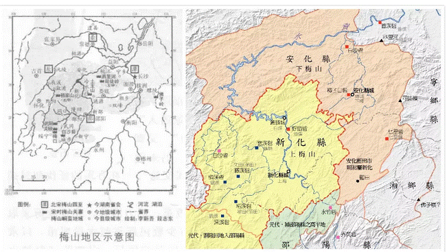
▍左：梅山地区示意图；右：梅山地区最早设立于北宋熙宁年间的新化县和安化县
随着时代推移，到明清时期，位于湘黔边界，包括黔东南和湘西在内的「苗疆」，成为西南地区最后一片不受官府管辖的「生界」。
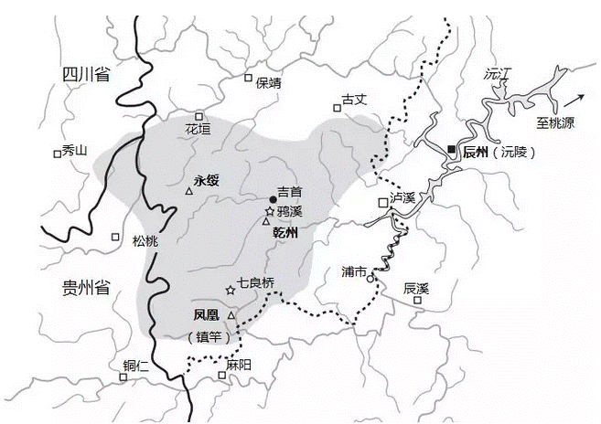
▍十八世纪湘西苗疆大致范围
在中原王朝眼中，治理苗疆的最重要任务，就是将语言不通、不受官府或地方土司管辖的「生苗」，改造成通晓汉人语言、向官府或土司纳税服役的「熟苗」，使苗疆成为「开化」之地。为达到这一目的，明清两代都煞费苦心。
明朝采取「以夷制夷」的策略，主要利用西南地区的土司来征剿「生苗」、镇守苗疆。而为了防范牵制土司，又在各个土司辖地周边，设立密集的卫所、军屯，形成犬牙交错、相互遏制的局面。
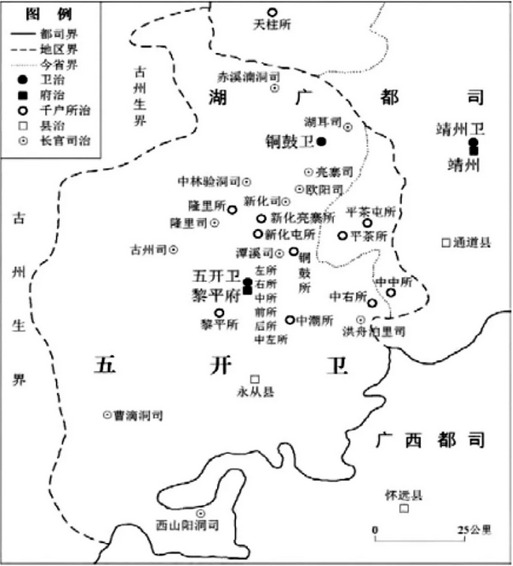
▍明代湘黔桂三省交界亮江地区府、卫、司犬牙交错示意图
但到了明末，西南各卫所衰败废弛，明朝不得不大量征召土司辖下的「土兵」，以填补卫所虚空。嘉靖时，驻守苗疆周围的六千六百多名官军中，真正属于卫所官军的，不到十分之一。
可想而知，靠征用土司土兵来维持苗疆稳定，只会使土司挟「苗」自重，尾大不掉。明末西南播州与奢安两大「土司之乱」，也由此而起。
而为了专注于抵挡来自北方的威胁，明朝只得彻底放弃征服「苗疆」的打算，用一道边墙，把墙外的「生苗」隔离在外。
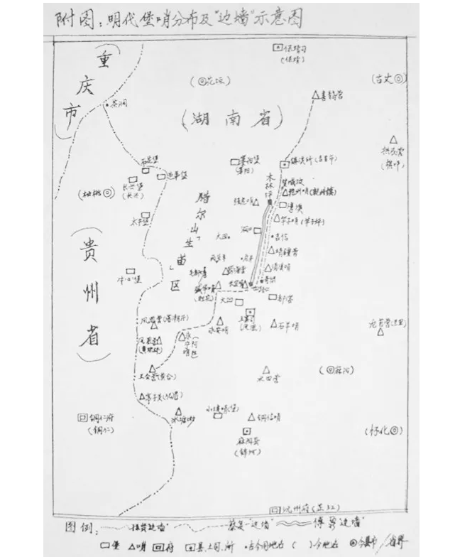
▍由学者实地考察手绘而成的「边墙示意图」，清晰地展现明清两代苗疆「边墙」走向及堡哨分布
与明代不同，实行了「改土归流」政策的清代不再「以夷制夷」，而是更加重视「教化」苗人的举措。
雍正时，苗疆大员张广泗曾建议：为学习汉文、参与科考的苗人学童特批生员名额，以示奖励。
乾隆时则有明文规定：不许「生苗」参加考试，以示对「熟苗」的优待。而应试的「熟苗」，须注明「新民籍」，既与汉人考生区别，又方便录取时的「照顾」。
同时，清廷还松弛前代在苗疆地区的禁令，允许「生苗」在官府登记、领取证件执照的前提下，与汉人、「熟苗」之间进行适当的贸易乃至通婚。不仅如此，只要不涉及造反，还允许苗疆苗人案件以「苗例」自行解决，哪怕是「命盗」等刑事案件，也「不妨稍予宽容」。
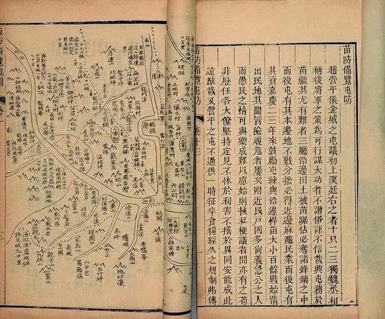
▍《苗防备览》书稿，该书详尽记载了湘西苗疆的地理状况
但无论是「生苗」还是「熟苗」，作为苗疆真正的主人，面对大量迁徙而来屯田、拓荒，侵占耕地的汉人「客户」，以及对苗民的攫取和盘剥不断加重的官府，「逐客民，还故地」始终是苗人最响亮的口号。
康、雍、乾三代，苗疆都未能摆脱「三十年一小反，六十年一大反」的所谓「苗患」。尤其是乾隆末年的苗民起义，清廷更是动用两湖、两广、云贵川七省十八万官兵，延续十余年才将其平息。
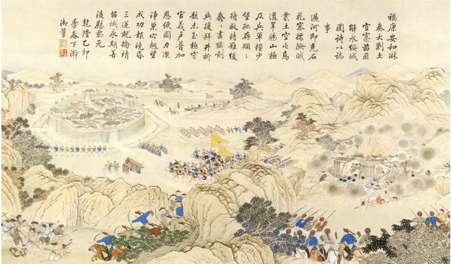
▍反映乾隆末年清军镇压湘西苗人的《平苗图册·福康安与和琳进剿土空寨借永绥之围》图。而福康安、和琳二位乾隆朝重臣，都在征剿苗疆的军中病殁。
进入嘉庆朝后，修筑长城将「苗疆」隔离，并严禁苗汉混杂，也成为清朝对苗疆不得已为之的最后办法。
那么，为什么迟至明清，西南地区还有如此大面积的地域未曾受到中原王朝的管辖，并且仍然难以控制呢？
鞭长莫及的「羁縻」之地
这是因为，明清之前的历朝历代，长久以来都是通过羁縻制度，对西南地区实行极为松散的控制，而从未实行过完整意义上的统治。
所谓「羁縻」，就是「控制」与「笼络」的结合体。具体而言，就是中原王朝通过赐予边疆各民族首领各种职位、称号、贵重礼物，来换取他们承认中原王朝名义上的统治地位。除了名义上的隶属关系和经济上的朝贡义务外，各边疆民族事实上大多仍旧保持独立，一切事物自主管理。
在中国历史地图上，尽管自秦汉以来，西南地区就被同一种颜色标示为均匀统一的整体；然而与现代国家连续不断的国境线不同，这一传统认知疆域内的广大区域，实际上并未被纳入中原王朝的直接统治中。
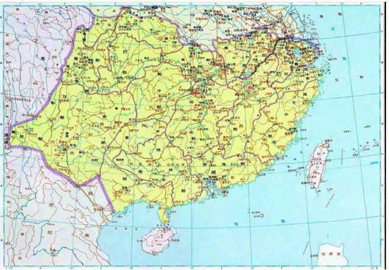
▍《中国历史地图集》中的秦代「淮汉以南诸郡」图，将南方大片并未控制或只有松散控制的地区，标为同一种颜色
今天湖南省的常德市，在汉代属于武陵郡。汉代武陵郡，仅控制了洞庭湖沿岸和沅江干流附近的狭窄地域，而湘西的大部分，比如被称为「五溪」的沅江支流地区，都为「武陵蛮」所占据。
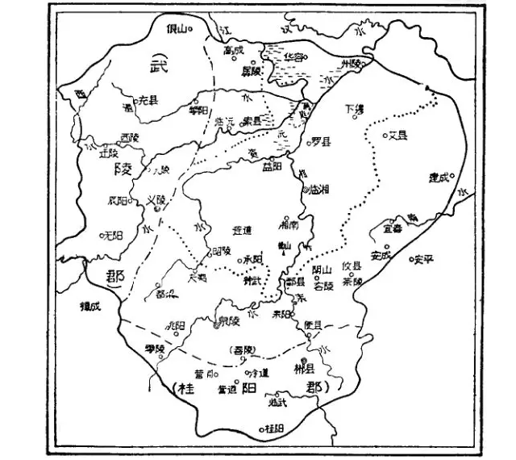
▍西汉时期的长沙国以及分置出的武陵郡、桂阳郡
东汉年间，「武陵蛮」多次起事，攻破武陵郡治，甚至威胁到长沙。东汉屡次征讨却往往无功而返，连东汉名将马援也病逝在征途中。
因而，东汉及后继政权，不得不转变策略，以怀柔策略拉拢「蛮夷」，向蛮人首领赐予印绶、爵号、财物，承认其地位。
而唐朝则在西南广设羁縻州，尽管为数有上百之多，但这些羁縻州府与藩属国、藩属部落之间的界线十分模糊。羁縻州往往像藩属国一样，仅仅接受册封并履行朝贡义务，实际上仍然是独立的。
由于唐朝常常向边疆各羁縻州摊派沉重的兵役和贡赋，许多羁縻州背离唐朝，甚至像南诏一样，彻底脱离中原王朝，走上自立的道路。
吸取唐朝教训的宋代，则将边疆地区的羁縻州府列为「极边」之地，轻易不干预其事务，也不将其纳入直接统治。
领受官职的羁縻州首领，在缴纳贡赋、提供兵员之外，其家族保持事实上的独立地位。湘西的彭氏、田氏、杨氏等羁縻州首领，在后世实行土司制度后继续保留其世袭权力，最长的统治竟长达八百多年。
依靠着这些名义归附而事实独立的地方政权，中原王朝仅仅在形式上维持着对西南地区的统治。而对羁縻统治下各部族、地域的具体情形，往往一无所知。
也正是如此，位于西南山区深处、连土司势力也少有涉足的苗疆，要等到元朝征服云南之后，才通过元明时期的驿道，最后进入中原王朝的视野。
驿道带来的征服
1253 年，忽必烈率蒙古大军，自川藏交界地带南下攻灭大理，将云南第一次置于中央王朝的直接管辖之下。
为了使云南行省与内地相通，元朝先后修筑了通往四川的建都道、乌蒙道和通往湖广的普安道三条驿道。由于元代云南的中心已从大理变为东部的昆明，一路东行、进入湖广后去往元大都一路坦途的普安道地位愈加重要。这条驿道，正好穿越了苗疆。
明朝建立后，为消灭盘踞在云南的元朝蒙古亲王，朱元璋派遣大军，自湖南沿沅江而上自东向西，重新打通并扩建了连接湘黔滇的普安驿道，并使之成为由内地进入云南的最主要通道。
为了保证驿道安全畅通，明朝在驿道沿线设立了一系列拱卫驿道的卫所。而明代永乐年间设立的贵州行省，其主要目的也正是为了维护这一通道，以及通道两侧由军屯、卫所控制的有限地域。
在明朝看来，被驿道穿越却又处于官府和土司掌控之外的苗疆，无疑是对明朝有效控制云南乃至西南的最大威胁之一。要消除威胁，就必须征服苗疆，将其纳入直接统治。
为此，明朝多次发动大规模的征剿和屠杀行动。在明初征剿黔东南苗疆的一次战役中，「都督何福奏讨都匀叛苗，斩四千七百余级，擒获六千三百九十余人，……」
而在针对湘西苗疆的另一次战役里，湖广总兵「两月间破寨八百，焚庐舍万三千三百……」
不过，与全面出击，「改土归流」和「开辟苗疆」并举的清朝相比，明朝的军事征服行动，就显得小巫见大巫了。
雍正年间，清朝在大规模削除湘黔土司，任用流官主政西南的同时，发动大军「开辟苗疆」，屠戮「生苗」。负责这一军事行动的云贵总督鄂尔泰在上疏雍正时称，「但恐今日不杀少，日后将杀多」，并一再下令，「不恭顺者，不计男女老少，通通斩光杀绝」。
为镇压苗民的反抗，清军在被称作「千里苗疆」的黔东南，共烧毁1224座苗寨；苗民被屠杀者超过30万，13600多人被发配为奴。
经过九年的血雨腥风，清朝将「千里苗疆」变为了「新辟苗疆」，在黔东南设立了八寨、丹江、都江、古州、清江、台拱「新疆六厅」。
尽管征服过程如此血腥残酷，然而明清还是无法将苗疆的居民彻底同化，以至于还必须在湘西修筑长城来隔离、防范。真正改变苗疆的，则是清朝在修筑长城之后「屯政」的施行。
清朝将长城两侧的汉民苗民编入各自的军屯，纳入国家统一管理，使之成为「寓兵于农」，为国家屯田的佃户。汉地和苗疆之间的交易，也在少数边卡的严密监视下进行。而边卡的任何进出，都必须办理「护照」，否则按偷越边境论处。
在密不透风的管控下，将苗疆变为由屯田兵丁进行生产建设的屯垦边区之后，湘西地区逐渐恢复了稳定。然而，在从清末到民国的混乱时期，屯政也迅速解体，失去田地的兵丁四处流窜，将湘西变为兵匪横行的地域。
除了少数边卡外，最后的苗疆长城，也随之废弃，其历史也逐渐被大多数人忘却，留给湖南和湘西的，只有边城的传说。
参考资料：
姜永琳，The “Southern Great Wall of China” in Fenghuang County: Discovery and Restoration，Ming Studies 68，2013
张振兴，《从哨堡到边墙：明代对湘西苗疆治策的演递》，2014
谢晓辉，《只愿贼在，岂肯灭贼？明代湘西苗疆开发与边墙修筑之再认识》，2012
伍新福，《清代湘黔边「苗防」考略》，2001
张中奎，《清代苗疆「国家化」范式研究》，2014
陈庆江，《元代云南通四川、 湖广驿路的变迁》，2003